Command Line Interface
Project Overview
Problem Statement:
In some cases, as well as in the past, having a graphical user interface to interact with a computer either took up very many resources or was simply not available. Thus, this activity teaches students how to navigate and use a command line interface, performing actions such as creating files, moving files, and changing the working directory.
Objectives:
- Know what a virtual machine does, as well as applications
- Know how to use a Linux (specifically Ubuntu) virtual machine and deal with the Linux terminal
- Learn basic commands (e.g. pwd and cd) to move through directories and understand absolute vs. relative paths
- Learn how to make, delete, move, copy, and edit files via terminal commands
Objectives (Troubleshooting Network Issues):
- Identify and interpret different IP addresses and their significance in network troubleshooting.
- Execute terminal commands to diagnose network connectivity issues on both Mac and Ubuntu systems.
- Compare and analyze network configurations in different VM networking models (Shared and Bridged).
- Apply a systematic troubleshooting methodology to diagnose network connectivity problems.
Success Criteria:
Complete several activities, such as "House Sitting Adventure," to demonstrate mastery of command line navigation in the Ubuntu virtual machine.
Design and Planning
Due Dates and Objectives
Map the Maze Part 1
- Due Date: September 2nd, 2025
- Objective: Learn basic CLI commands
Map the Maze Part 2
- Due Date: Septemer 10th, 2025
- Objective: Apply CLI commands in an Ubuntu Virtual Machine, and learn how to navigate a real file system
House Sitting Adventure
- Due Date: September 12th, 2025
- Objective: Apply everything learned from the previous activities to navigate a given directory without guidance
Map The Maze (Part 1)
Useful Definitions/Examples
| Term | Definition | Example |
|---|---|---|
| Root Directory | The highest directory in the file system from which everything branches | "C:\" for PC, "/" for Mac |
| Folder/Directory | Organizes files or other folders | "Desktop" in the home directory |
| File | Object which stores data; has a name and (usually) an extension | Text documents |
| Path | Shows location of a file/folder in the file system; represents the address of a file | "~/Desktop/notes.txt" |
| Absolute Path | The entire address of a file/folder, starting with the root directory | "/Users/Cruz/Music/song.mp3" |
| Relative Path | The location of a file relative to the working directory | "essay.docx" if the working directory has that file |
File System Tree Activity
In this activity, students created an example diagram displaying how directories and files are organized and interact with each other by making a file system tree.
Initially, students were tasked to create a top-down diagram starting from the root directory with:
- A home directory
- Three subfolders
- At least two sample files
Here is the diagram:
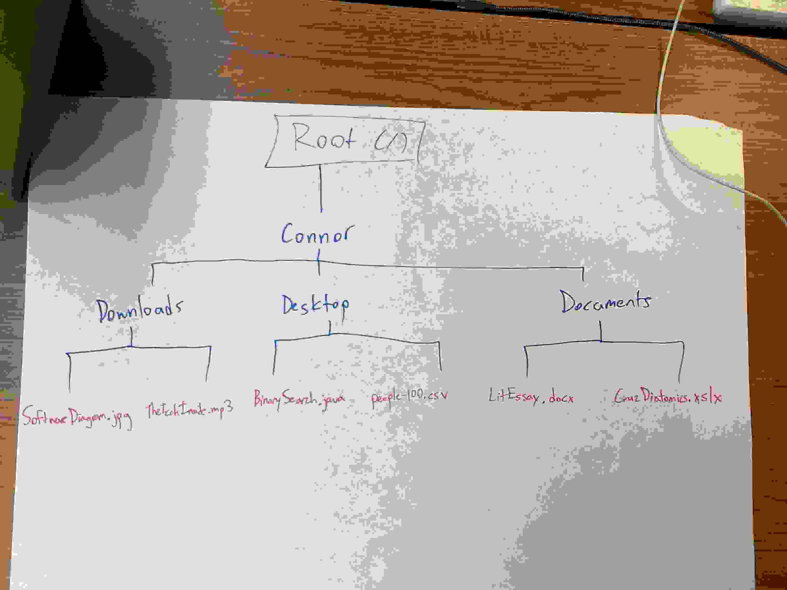
Afterwards, that diagram was used to create a text version of the file system tree made previously.
This is the text diagram:
/
|_Connor
| |-Downloads
| | |-SoftwareDiagram.jpg
| | |_TheTechInside.mp3
|-Desktop
| |-BinarySearch.java
| |_people-100.csv
|_Documents
|-LitEssay.docx
|_CruzDiatomics.xslx
Command Definitions
| Term | Definition |
|---|---|
| pwd | Prints the full path of the working directory |
| ls | Lists files/subfolders in the working directory |
| cd | Changes the working directory |
| mkdir | Makes a directory in the working directory |
| touch | Creates an empty file |
| cp | Duplicates a file or directory |
| mv | Moves a file or directory OR renames a file/directory |
| open | Opens a file/directory |
| rm | Removes a file; CANNOT BE UNDONE |
Mac File System Tree
With the knowledge of basic terminal commands, students were also tasked to create example directories and files in their Mac computers, then navigate through them, doing as follows: - Create a directory in home called "Practice" - Make three folders in Practice: Docs, Photos, and Music - Create a file named "notes.txt" in Docs - Move notes.txt into Music - Change the working directory to Music, and print the working directory
These tasks were accomplished using knowledge of the following commands:
- cd to change directories
- mkdir to create a folder
- touch to create a file
- mv to move a file
- pwd to print the working directory
The final tree structure after this process is:
/
|_Users
|_26cruzc
|_Practice
|-Docs
|-Photos
|_Music
|_notes.txt
When printing the working directory via 'pwd', this path was obtained: /Users/26cruzc/Practice/Music
This matched the path which was obtained through Finder, so it was confirmed that 'pwd' returned the correct working directory.
The Linux Command Line For Beginners (Tutorial)
This activity allowed for students to learn basic Ubuntu (or othe Linux version) terminal commands and the general layout of Ubuntu's CLI.
The tutorial used can be found here.
Opening a Teminal
This section allowed users to become familiar with these commands learned previously: 'cd' and 'pwd'.
For 'cd', some useful concepts learned were that '~' represents the home directory, and that '..' represents the parent directory.
A new command was also learned: 'whoami', which returns the username of the person running the command.
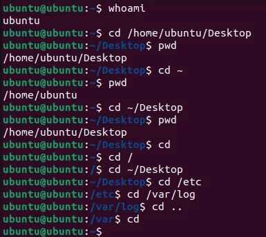
Creating Folders and Files
Note that many of the commands run are not shown due to the computer running the VM being reset. However, the part shown summarizes the concepts learned.
In summary, this part of the activity taught the following:
- Linux's CLI makes it such that 'mkdir word1 word2' makes two separate directories 'word1' and 'word2' rather than 'word1 word2'
- Spaces (and other special characters in Linux CLI) can be escaped using the '\' character
- The '>' command writes the output of a command to a file
- 'echo' returns its argument
- 'cat' with more than one argument concatenates the contents of files as a single block of text
- '>>' appends an output to a file
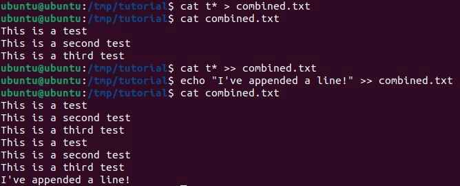
Moving and Manipulating Files
This section goes over commands to move, copy, and remove files, which were mostly dealt with in Map the Maze Part 1:
- 'mv' moves the first arguments into the final argument
- If 'mv' is run with two file/directory arguments of the same type, it will rename the first argument to the second
- 'cp' copies its first arguments into its last argument (which can be either a file or directory)
- 'rm' can remove a file but cannot remove a directory
- 'rmdir' is used to remove directories
- 'rm -r' remoevs a directory and all of its contents, which can be dangerous
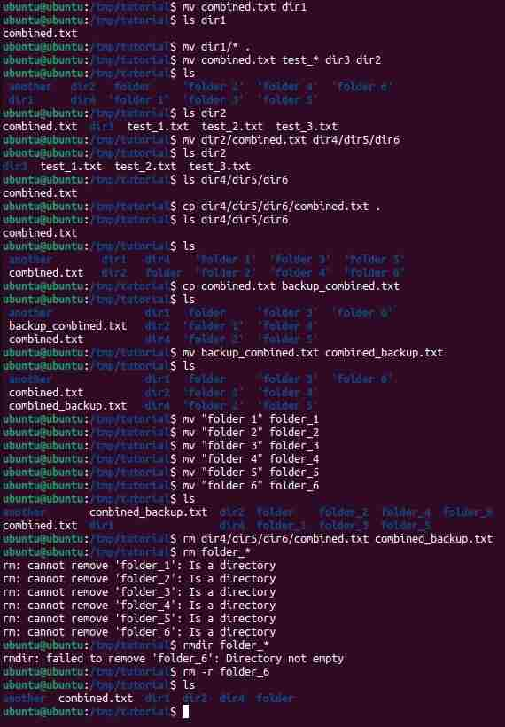
A Bit of Plumbing
Although this section was not required, it is useful to know for general use. It primarily introduced the pipe command:
- The output of the left side of the pipe command '|' is input as an argument to the right side of the pipe command
- Multiple pipes can be used in succession, going from left to right
- 'sort' sorts the contents of a file alphabetically
- 'wc' gets the word count of a file, and 'wc -l' gets the line count
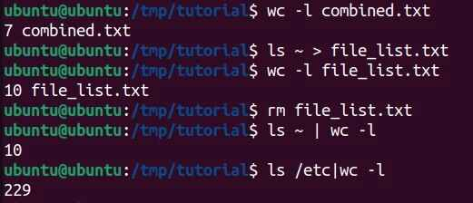
The Command Line and Superuser
This section goes over permissions:
- The 'su' command allows the user to change to the root user without logging out and logging back in
- 'sudo' is a prefix to a command which is to be run with administrator privileges
While there was some code written for this segment, it does not pertain much to the concepts taught.
Hidden Files
This section briefly taught about how to denote hidden files:
- Hidden files/directories always start with a '.'
- To reveal hidden files/directories when using a command, add the '-a' switch
Troubleshooting Network Issues (Mac)
This assignment explained the fundamental troubleshooting process:
- Determine if the device is connected.
- Check if the device is assigned an IP address.
- Check if the device can reach the internet.
- Check if DNS is functional (i.e. it can look up names).
Device Connection/IP Address
To check for a device's IP address (on a Mac), one must use the ifconfig command. If the Mac is connected to the router via ethernet, an active IP address should be displayed on en0. However, if it is connected to the router via Wi-Fi, en1 should be active instead.
Here is the output when ifconfig was run:
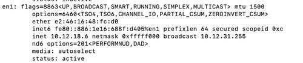
Note that the Mac connected to the router via Wi-Fi, so en1 being active makes sense.
To see what happens when the device is not connected, the Wi-Fi was turned off on the Mac by toggling the Wi-Fi switch. As a result, both en0 and en1 became inactive:
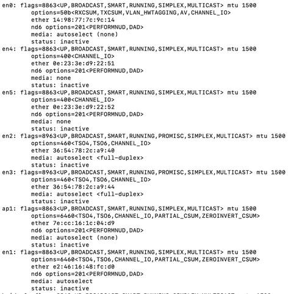
When reconnecting to Wi-Fi, the same results as the initial run of ifconfig were output.
Reachability
To determine reachability of websites, the ping command was used with the desired IP address. Two common addresses for using this command are 8.8.8.8 (Google) and 1.1.1.1 (Cloudflare). Note that with these pings, the -c switch was appended with the argument '4' to signify that it was to retrieve 4 packets.
The ping command essentially sends a signal to a desired server (designated by the desired IP address), and the server sends packets back to the host device. The time in milliseconds for the host device to receive these packets is also noted.
This is the output when ping was run:
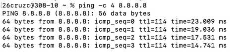
When comparing the ping times between Google DNS and Cloudflare DNS, Google's server obtained a faster response time (18.664 ms compared to 20.725 ms). Two possible reasons for this disparity are:
- Cloudflare's host server's location might be farther.
- Cloudflare requires more intermediary steps to access.
Finding the Default Gateway
The default gateway of a device is generally its router. To obtain its IP address, one of the following commands can be used:
Mac
netstat -nr | grep defaultroute -n get default
Linux:
ip routenetstat -rn
Here is the output when accessing the default gateway on both Mac and Linux:
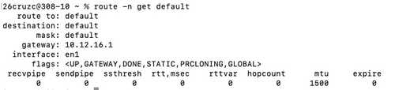
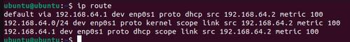
When pinging the default gateway, the response time is also expected to be faster because the router must be accessed before going to external servers. The router is also much closer physically.
DNS
To check if DNS works, one must first determine that accessing servers by IP address works. Then, the ping command must be run again with a text-based argument. For example, the command ping -c 4 google.com can be performed.
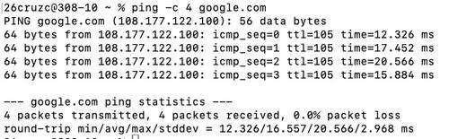
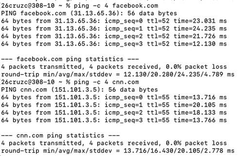
Troubleshooting Network Issues (Ubuntu)
Device Connection/IP Address
To obtain the IP address of an Ubuntu virtual machine, the command ip addr is run. In the case of the Ubuntu VM, the IP address is found under enp0s1.
There are two primary modes to assign an IP address to a Virtual Machine: Shared and Bridged Mode.
Shared Mode:
In shared mode, the IP address of the virtual machine is assigned by the host device. It is assigned a private IP address, so it is not able to interact with any other devices connected to the router. Furthermore, any traffic going in our out of the virtual machine must go through the host device first.
This is the output of ip addr when in Shared Mode:
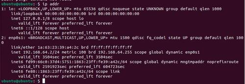
As shown in the image, the Mac address is 1a:63:23:39:a4:2c, which can be found next to link/ether.
The VM's address is displayed next to inet: 192.168.64.2/24.
Bridged Mode:
In bridged mode, the virtual machine acts as its own separate machine. The VM is usually assigned its own IP address by the router, and it can be accessed independently of the host machine. However, Bridged Mode may pose security risks since it is unmonitored by the host system and has direct access to the local network.
Here is the output when ip addr is run in Bridged Mode:
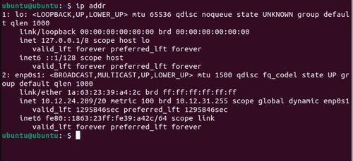
As shown in the image, the Mac address is 1a:63:23:39:a4:2c, which is the same as in Shared Mode.
However, the VM's address is 10.12.24.209/20, which is different than in Shared Mode.
Despite being in Bridged Mode, the Virtual Machine can still ping the Mac. This is because the VM can access the Mac via the router's connection.
Reachability
To test reachability on Ubuntu, the same command as Mac is used: ping -c 4 8.8.8.8.
Note that the ping package may have to be installed prior to running this command.
Here is the output when ping is run:
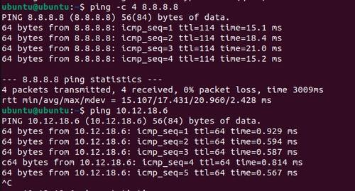
DNS
Testing DNS is also the same as in Mac, using the command ping -c 4 google.com.
Technical Development
Map The Maze (Part 2)
Using the commands learned during Map The Maze (Part 1), they were similarly applied to the terminal of a Linux virtual machine running on Ubuntu. This activity also entailed linking a directory in the host system to the virtual machine and moving files between them.
This command was used to print the working directory, serving as a review of previously learned concepts:
ubuntu@ubuntu:~$ pwd
/home/ubuntu
This segment changes the directory to 'Documents' and prints the working directory, which is confirmed to be Documents:
ubuntu@ubuntu:~$ cd Documents
ubuntu@ubuntu:~/Documents$ pwd
/home/ubuntu/Documents
In Documents, the MazeGame directory was made using 'mdir', and 'ls' confirms that it was made successfully:
ubuntu@ubuntu:~/Documents$ mkdir MazeGame
ubuntu@ubuntu:~/Documents$ ls
MazeGame
This segment moves the working directory to MazeGame and creates three txt files using the 'touch' command:
ubuntu@ubuntu:~/Documents$ cd MazeGame
ubuntu@ubuntu:~/Documents/MazeGame$ touch clue1.txt clue2.txt clue3.txt
ubuntu@ubuntu:~/Documents/MazeGame$ ls
clue1.txt clue2.txt clue3.txt
Nano is used to edit clue1.txt:
ubuntu@ubuntu:~/Documents/MazeGame$ nano clue1.txt
Here is the nano UI, which allowed for clue1.txt to be written to and saved:
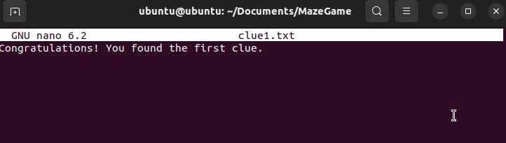
This segment copies clue1.txt to '~/hostshare', which required administrator priviliges. To obtain these privileges, 'sudo' was used:
ubuntu@ubuntu:~/Documents/MazeGame$ sudo cp clue1.txt ~/hostshare
[sudo] password for ubuntu:
ubuntu@ubuntu:~/Documents/MazeGame$ ls ~/hostshare
clue1.txt
To copy a file from the Mac to MazeGame, the 'Shared Directory' value in the UTM had to be changed. For the purposes of this assignment, the 'Desktop' folder in the host system was chosen.
After restarting the VM, it was then required to link ~/hostshare and the shared directory (Desktop) via the following command:
ubuntu@ubuntu:~$ sudo mount -t davfs http://127.0.0.1:9843/ ~/hostshare/
The directory is changed to hostshare, and 'ls' confirms that th files from the host system's Desktop folder are shared. 'mv' is also used to move the screenshot in hostshare to MazeGame:
ubuntu@ubuntu:~$ cd hostshare
ubuntu@ubuntu:~/hostshare$ ls
'Screenshot 2025-09-05 at 2.23.11 PM.png'
ubuntu@ubuntu:~/hostshare$ mv 'Screenshot 2025-09-05 at 2.23.11 PM.png' ~/Documents/MazeGame
ubuntu@ubuntu:~/hostshare$ cd ~/Documents/MazeGame
This command confirms that the screenshot was successfully moved to MazeGame:
ubuntu@ubuntu:~/Documents/MazeGame$ ls
'Screenshot 2025-09-05 at 2.23.11 PM.png' clue2.txt
clue1.txt clue3.txt
Similarly to above, 'ls' is run, but with the '-a' switch added. This switch allows for all files/directories to be shown, including hidden files:
ubuntu@ubuntu:~/Documents/MazeGame$ ls -a
. 'Screenshot 2025-09-05 at 2.23.11 PM.png' clue2.txt
.. clue1.txt clue3.txt
Another student created a sercet file on this VM. This file was found using 'ls -a' and printed using the 'cat' command:
ubuntu@ubuntu:~/Documents/MazeGame$ ls -a
. .secret.txt clue1.txt clue3.txt
.. 'Screenshot 2025-09-05 at 2.23.11 PM.png' clue2.txt
ubuntu@ubuntu:~/Documents/MazeGame$ cat .secret.txt
This is secret :O
Testing and Evaluation
Map The Maze (Part 3)
To evaluate students' knowledge of the command line interface, they used Linux commands to navigate and modify a pre-made 'House' directory.
The GitHub repository in which this directory can be found is linked here.
To start, the commands below perform the following:
- Navigate into the house directory using 'cd'
- Check possible places to navigate to using 'ls'
ubuntu@ubuntu:~/Documents/CK-Building-Content-Knowledge-Workshop/Unit 1 Activity
- House Exploration$ ls
README.md house
ubuntu@ubuntu:~/Documents/CK-Building-Content-Knowledge-Workshop/Unit 1 Activity
- House Exploration$ cd house
ubuntu@ubuntu:~/Documents/CK-Building-Content-Knowledge-Workshop/Unit 1 Activity
- House Exploration/house$ ls
bedroom1 bedroom2 garage kitchen main_entrance
ubuntu@ubuntu:~/Documents/CK-Building-Content-Knowledge-Workshop/Unit 1 Activity
The next segment completes the following:
- Navigate into the main entrance (using 'cd')
- Find and open a set of instructions in the main entrance (using 'ls' and 'open')
- Return to the house level (using 'cd')
ubuntu@ubuntu:~/Documents/CK-Building-Content-Knowledge-Workshop/Unit 1 Activity
- House Exploration/house$ cd main_entrance
ubuntu@ubuntu:~/Documents/CK-Building-Content-Knowledge-Workshop/Unit 1 Activity
- House Exploration/house/main_entrance$ ls
instructions.txt unopened_mail1.txt unopened_mail3.txt
shoerack unopened_mail2.txt
ubuntu@ubuntu:~/Documents/CK-Building-Content-Knowledge-Workshop/Unit 1 Activity
- House Exploration/house/main_entrance$ open instructions.txt
ubuntu@ubuntu:~/Documents/CK-Building-Content-Knowledge-Workshop/Unit 1 Activity
- House Exploration/house/main_entrance$ cd ..
This segment checks the kitchen, "eats food" (deletes files), and checks for hidden files. Using 'rm' successfully removed the two food items specified.
ubuntu@ubuntu:~/Documents/CK-Building-Content-Knowledge-Workshop/Unit 1 Activity
- House Exploration/house$ cd kitchen
ubuntu@ubuntu:~/Documents/CK-Building-Content-Knowledge-Workshop/Unit 1 Activity
- House Exploration/house/kitchen$ ls -a
. .. .rotten_bananas banana cereal crackers donut milk orange
ubuntu@ubuntu:~/Documents/CK-Building-Content-Knowledge-Workshop/Unit 1 Activity
- House Exploration/house/kitchen$ rm cereal .rotten_bananas
ubuntu@ubuntu:~/Documents/CK-Building-Content-Knowledge-Workshop/Unit 1 Activity
- House Exploration/house/kitchen$ ls -a
. .. banana crackers donut milk orange
This next segment searches the bedrooms thoroughly and checks the current location in the house with 'pwd'. As shown below, a secret diary was found in Bedroom 1, and but Bedroom 2 did not contain any notable files.
ubuntu@ubuntu:~/Documents/CK-Building-Content-Knowledge-Workshop/Unit 1 Activity
- House Exploration/house/kitchen$ cd ../bedroom1
ubuntu@ubuntu:~/Documents/CK-Building-Content-Knowledge-Workshop/Unit 1 Activity
- House Exploration/house/bedroom1$ ls -a
. .. .secret_diary.txt
ubuntu@ubuntu:~/Documents/CK-Building-Content-Knowledge-Workshop/Unit 1 Activity
- House Exploration/house/bedroom1$ cd ../bedroom2
ubuntu@ubuntu:~/Documents/CK-Building-Content-Knowledge-Workshop/Unit 1 Activity
- House Exploration/house/bedroom2$ ls -a
. .. chair desk messy_bed
ubuntu@ubuntu:~/Documents/CK-Building-Content-Knowledge-Workshop/Unit 1 Activity
- House Exploration/house/bedroom2$ ls desk
ubuntu@ubuntu:~/Documents/CK-Building-Content-Knowledge-Workshop/Unit 1 Activity
- House Exploration/house/bedroom2$ open desk/search_desk.txt
ubuntu@ubuntu:~/Documents/CK-Building-Content-Knowledge-Workshop/Unit 1 Activity
- House Exploration/house/bedroom2$ pwd
/home/ubuntu/Documents/CK-Building-Content-Knowledge-Workshop/Unit 1 Activity -
House Exploration/house/bedroom2
This segment searches the garage and does the following:
- Removes all garbage using rm g* (removing any file that starts with a 'g')
- Moves into each cardboard box directory using 'cd' and checks for trash using 'ls'
- Removes cardboard_box and cardboard_box 2, as well as their contents, using 'rm' with the '-r' switch
- Checks which files remain using 'ls -a' to confirm that all garbage and boxes with trash were removed
ubuntu@ubuntu:~/Documents/CK-Building-Content-Knowledge-Workshop/Unit 1 Activity
- House Exploration/house/bedroom2$ cd ../garage/
ubuntu@ubuntu:~/Documents/CK-Building-Content-Knowledge-Workshop/Unit 1 Activity
- House Exploration/house/garage$ ls -a
. cardboard_box cardboard_box3 garbage1 garbage3
.. cardboard_box2 garbage garbage2 hose
ubuntu@ubuntu:~/Documents/CK-Building-Content-Knowledge-Workshop/Unit 1 Activity
- House Exploration/house/garage$ rm g*
ubuntu@ubuntu:~/Documents/CK-Building-Content-Knowledge-Workshop/Unit 1 Activity
- House Exploration/house/garage$
ubuntu@ubuntu:~/Documents/CK-Building-Content-Knowledge-Workshop/Unit 1 Activity
- House Exploration/house/garage$ cd cardboard_box
ubuntu@ubuntu:~/Documents/CK-Building-Content-Knowledge-Workshop/Unit 1 Activity
- House Exploration/house/garage/cardboard_box$ ls -a
. .. cardboard_box
ubuntu@ubuntu:~/Documents/CK-Building-Content-Knowledge-Workshop/Unit 1 Activity
- House Exploration/house/garage/cardboard_box$ cd cardboard_box/cardboard_box
ubuntu@ubuntu:~/Documents/CK-Building-Content-Knowledge-Workshop/Unit 1 Activity
- House Exploration/house/garage/cardboard_box/cardboard_box/cardboard_box$ ls
trash
ubuntu@ubuntu:~/Documents/CK-Building-Content-Knowledge-Workshop/Unit 1 Activity
- House Exploration/house/garage/cardboard_box/cardboard_box/cardboard_box$ cd
../../../cardboard_box2
ubuntu@ubuntu:~/Documents/CK-Building-Content-Knowledge-Workshop/Unit 1 Activity
- House Exploration/house/garage/cardboard_box2$ ls
trash
ubuntu@ubuntu:~/Documents/CK-Building-Content-Knowledge-Workshop/Unit 1 Activity
- House Exploration/house/garage/cardboard_box2$ cd ../cardboard_box3
ubuntu@ubuntu:~/Documents/CK-Building-Content-Knowledge-Workshop/Unit 1 Activity
- House Exploration/house/garage/cardboard_box3$ ls
family_pictures
ubuntu@ubuntu:~/Documents/CK-Building-Content-Knowledge-Workshop/Unit 1 Activity
- House Exploration/house/garage/cardboard_box3$ cd ..
ubuntu@ubuntu:~/Documents/CK-Building-Content-Knowledge-Workshop/Unit 1 Activity
- House Exploration/house/garage$ rm -r cardboard_box cardboard_box2
ubuntu@ubuntu:~/Documents/CK-Building-Content-Knowledge-Workshop/Unit 1 Activity
- House Exploration/house/garage$ ls -a
. .. cardboard_box3 hose
These commands move the user to the house directory then create and edit a txt file called 'note.txt' using nano:
ubuntu@ubuntu:~/Documents/CK-Building-Content-Knowledge-Workshop/Unit 1 Activity
- House Exploration/house/garage$ cd ..
ubuntu@ubuntu:~/Documents/CK-Building-Content-Knowledge-Workshop/Unit 1 Activity
- House Exploration/house$ touch note.txt
ubuntu@ubuntu:~/Documents/CK-Building-Content-Knowledge-Workshop/Unit 1 Activity
- House Exploration/house$ nano note.txt
ubuntu@ubuntu:~/Documents/CK-Building-Content-Knowledge-Workshop/Unit 1 Activity
- House Exploration/house$ cat note.txt
Hello!! Your house is wonderful
As shown above, after using the Nano editor, 'cat' was used to verify that note.txt was successfully changed.
As an optional addition to the activity, this segment navigates to a hidden directory into the house and reveals the contents of a hidden message:
ubuntu@ubuntu:~/Documents/CK-Building-Content-Knowledge-Workshop/Unit 1 Activity
- House Exploration/house$ cd .hidden_basement
ubuntu@ubuntu:~/Documents/CK-Building-Content-Knowledge-Workshop/Unit 1 Activity
- House Exploration/house/.hidden_basement$ ls -a
. .. .hidden_stash
ubuntu@ubuntu:~/Documents/CK-Building-Content-Knowledge-Workshop/Unit 1 Activity
- House Exploration/house/.hidden_basement$ cat .hidden_stash
Congratulations! Put 'I won the game!' in chat to confirm how much of a winner
you are!
As the hidden message says: I won the game!
Reflection and Analysis
Through the Command Line Interface activity, basic navigation through a command line interface, specifically on a Linux Ubuntu virtual machine, was learned. Specifically, students learned how to create, modify, and remove files, as well as navigate through directories via absolute and relative pathing. The knowledge of navigation was also applied to multiple activities, providing a simpler version of real-world navigation through directories. This activity was quite difficult compared to file navigation with a GUI since the only means that could be used to navigate and look were commands and their respective outputs. However, training to use a command line fo navigation can especially help in the business world, as a user interface may provide security issues in a company or be too resource-heavy for systems with large amounts of files. Navigating using commands also solidified the ideas learned through diagramming file system trees, allowing them to be applied in more general contexts. Knowledge of the command line interface, can branch out into many different areas, even those outside of Networking. However, the command line interface will be especially useful when learning about protocols and IP addresses in order to obtain information about a system, packets, and other concepts.